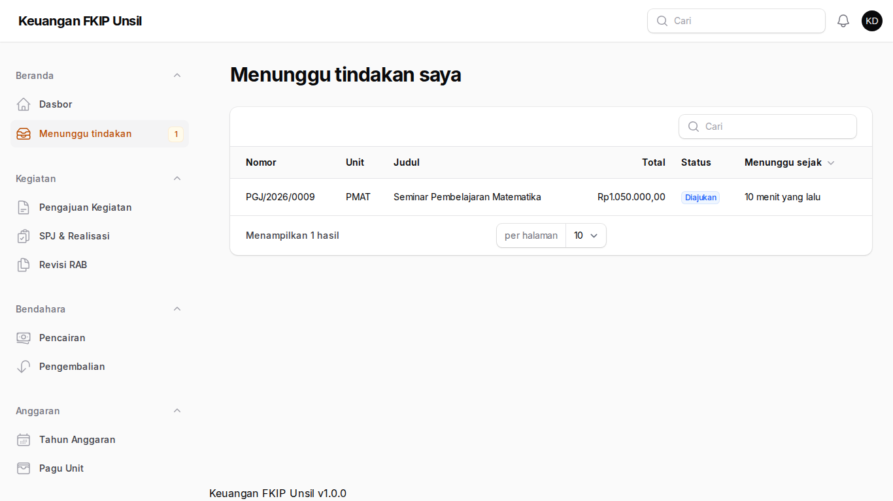
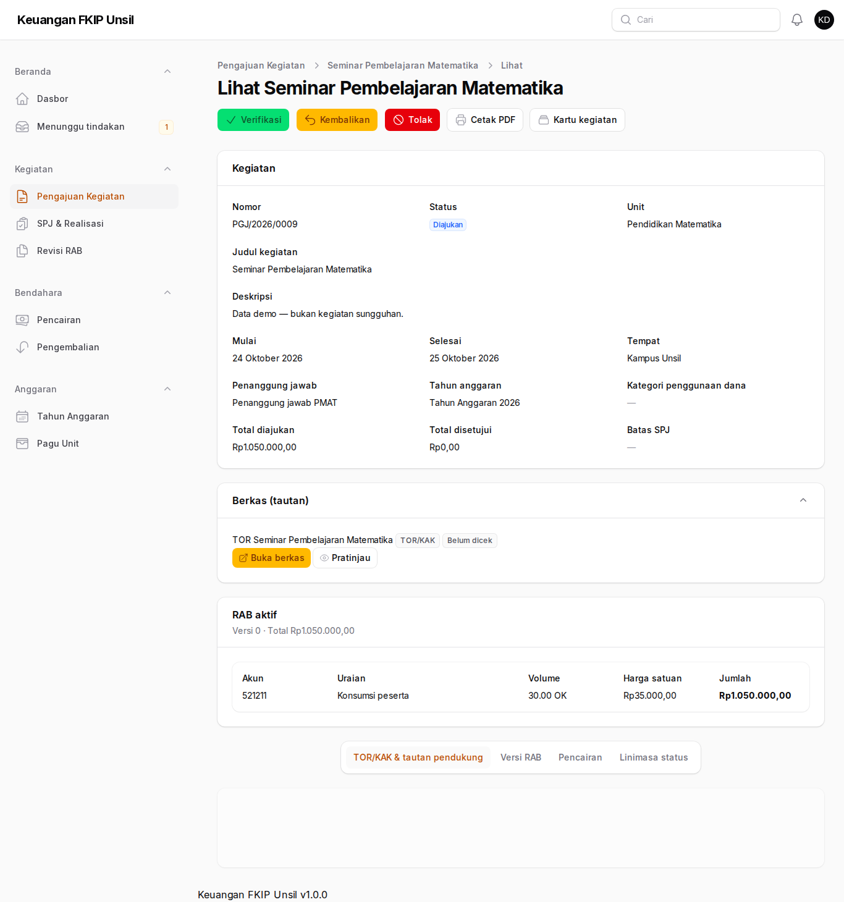
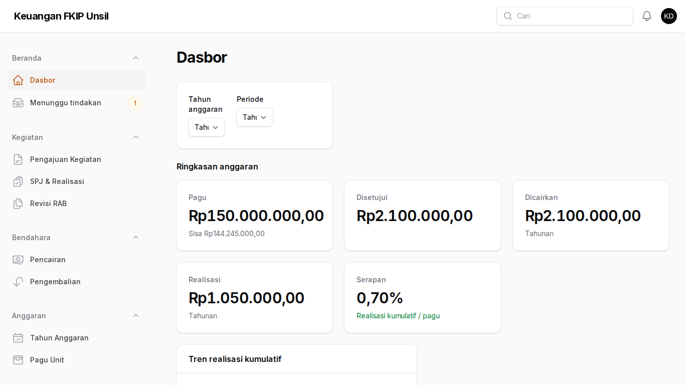
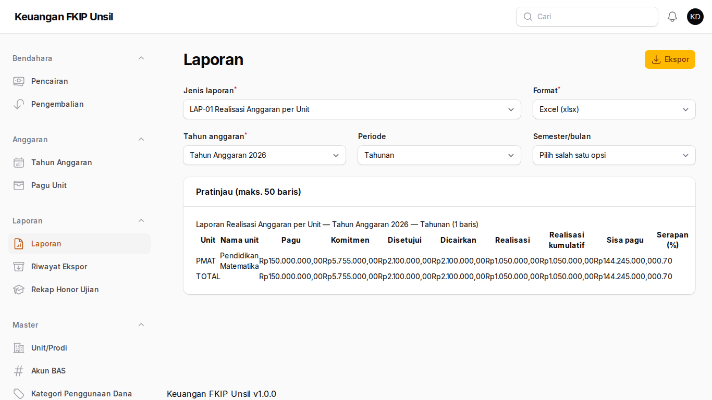

Panduan Ketua Prodi/Kepala Unit
Peran: kepala-unit
Tujuan peran
Memverifikasi pengajuan unit Anda (tahap unit) dan memantau serapan anggaran unit.
Cara masuk
- Buka halaman masuk aplikasi (alamat https://supportfkip.unsil.ac.id/keuangan/panel).
- Isi Alamat email dan Kata sandi akun Anda, lalu klik Masuk.
Langkah-langkah
Antrean verifikasi
Buka Beranda → Menunggu tindakan. Daftar berisi pengajuan unit Anda berstatus Diajukan; angka di menu menunjukkan jumlahnya.

Antrean verifikasi Memutuskan pengajuan
Buka pengajuan, periksa RAB dan TOR (Buka berkas/Pratinjau). Pilih Verifikasi, Kembalikan (catatan wajib), atau Tolak (catatan wajib). Anda tidak dapat memverifikasi pengajuan yang Anda buat sendiri.

Memutuskan pengajuan Dasbor unit
Beranda → Dasbor menampilkan serapan, tren realisasi bulanan, dan SPJ jatuh tempo untuk unit Anda.

Dasbor unit Laporan unit
Laporan → Laporan: pilih LAP-01, LAP-04, atau LAP-08, atur periode, lalu unduh Excel/PDF.

Laporan unit
Tanya-jawab
- Pengajuan unit lain tidak terlihat?
- Benar — kepala unit hanya melihat unitnya sendiri.
Kontak
Admin Keuangan FKIP (keuangan-fkip@unsil.ac.id) · Admin TI Fakultas untuk akun & MFA.